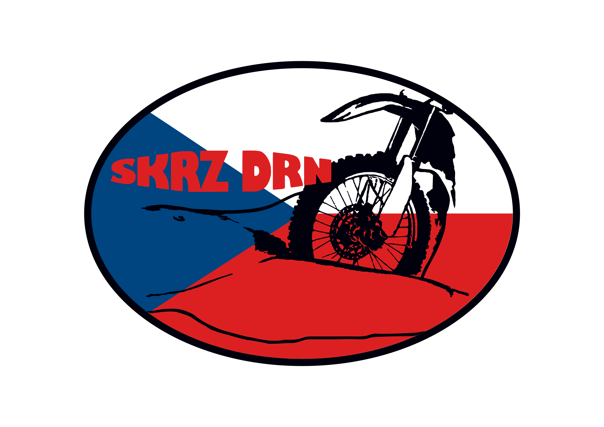

#748
Závodník
Miroslav Hejsek
Honda CR125r + Jawa 50/23 Mustang
- Kategorie: Superhobby + Originál / Fichtl 24h
„Když to nejde silou, vezmi větší kladivo nebo stahovací pásku.“
Jedna parta, dvě vášně. Zatímco jedni hltají tisíce kilometrů nejen po Evropě na cestovních endurech, mladí kluci ždímají dvoutakty různých kubatur na doraz na 24hodinovkách a motokrosových tratích.

Kde nás letos potkáte na trati, v depu nebo u ohně.
| Datum | Akce / Závod | Místo | Divize | Stav / Odkaz |
|---|---|---|---|---|
| 16. 5. 2026 | Jarní otevření sezóny & vyjížďka | Kundratice – Pod Strážníkem | Výlet | Fotky z akce → |
| 20. 6. 2026 | Fichtl MAZEC – 24h vytrvalostní závod | Podkrkonoší | Závody | Report z depa → |
| 18. 7. 2026 | Alpský okruh & Grossglockner | Rakousko / Itálie | Cestopis | GPX trasa → |
| 6. 9. 2026 | Enduro Cross Country (ECC) | Bystrá nad Jizerou | Závody | Galerie Rajče → |
| 19. 9. 2026 | Enduro Cross Country (ECC) | Vysoké nad Jizerou | Závody | Galerie Rajče → |
Kdo kroutí plynem a na čem?
Honda CR125r + Jawa 50/23 Mustang
„Když to nejde silou, vezmi větší kladivo nebo stahovací pásku.“
Jawa 50/23 Mustang
„Brzdy jsou jen pro ty, co nevěří svému andělovi strážnému.“
KTM SXF 450
„Brzdy jsou jen pro ty, co nevěří svému andělovi strážnému.“
Cestovní endura & Naháče (750–1250 ccm)
„Cíl není důležitý, hlavní je nejet po dálnici a najít dobrou hospodu.“
Vyber si, jestli tě víc zajímá vůně spáleného dvoutaktu v depu, nebo plánování tras.
Start se povedl na jedničku, prvních šest hodin Mustang šlapal jako hodinky. Kolem půlnoci ale přišla průtrž mračen a ve tři ráno praskl držák stupačky. V depu nastoupila svářečka, rychlá výměna svíčky a jelo se dál až pod šachovnicový prapor.
Pravidla kategorie Originál jsou neúprosná: maximální vrtání 40 mm, sériové časování kanálů, originální karburátor i výfuk. O to víc rozhoduje precizní slícování, spolehlivé zapalování, kvalitní ložiska na klice a vyztužení kyvné vidlice i krku řízení.
| Závod | Jezdec / Posádka | Stroj | Umístění |
|---|---|---|---|
| Fichtl MAZEC 24h | SkrzDrn Racing Team | Jawa 50/23 Mustang | Dojeto v cíli (bez ztráty kytičky) |
| Pohár Podkrkonoší | SkrzDrn Junior | Jawa 50/21 Pionýr | TOP 10 ve třídě |
Start v Kundraticích, přes Semily, Vysoké nad Jizerou, Souš, Smědavu a zpět přes Ještědský hřeben. Ideální půldenní vyjížďka s parádním povrchem.
Vyrazili jsme v pátek za rozbřesku. První den déšť u Budějovic, druhý den nekonečné serpentiny a spaní pod širákem. Cestou zpět jsme řešili povolený řetěz na benzínce, ale domů jsme dorazili všichni po ose.
Výběr nejlepších momentek z tratě, depa i večerního posezení. Kompletní alba najdeš na Rajčeti.
Bláto, skoky, souboje v zatáčkách a momentky z depa.
Otevřít celé album na Rajče.net →Rozborky motorů, svařování výztuh a ladění na ponku.
Otevřít celé album na Rajče.net →Společné kilometry, zastávky na vyhlídkách a večerní oheň.
Otevřít celé album na Rajče.net →Tohle k motorkám patří stejně jako benzín a olej.
„To nemá vůli, to je tepelná dilatace pro vysoké otáčky!“
Ocenění za nejkreativnější polní opravu: Připevnění uvolněného výfuku a zadního blatníku pomocí šesti stahovacích pásek a kusu vázacího drátu pět minut před startem rozjížďky. Drželo to až do cíle!
Děkujeme všem firmám, dílnám a kamarádům, kteří nás drží ve stopě a pomáhají stavět stroje.
Podpora financování spolku.
Podpora financování spolku.
Pomoc s výrobou výztuh rámů, stupaček, držáků a zakázkových dílů.
Zázemí, občerstvení v depu a fandění podél tratě od startu až do cíle.
Rádi umístíme tvé logo na závodní stroje, týmové dresy, stan v depu i sem na web. Stačí napsat a domluvíme se u kafe nebo v garáži.
Domluvit spolupráciChceš se přidat na vyjížďku, domluvit společný trénink nebo podpořit náš tým? Ozvi se nám.
Domovská garáž v Kundraticích u Košťálova v Podkrkonoší. Vyrážíme odtud na závody po celé republice i na alpské průsmyky.